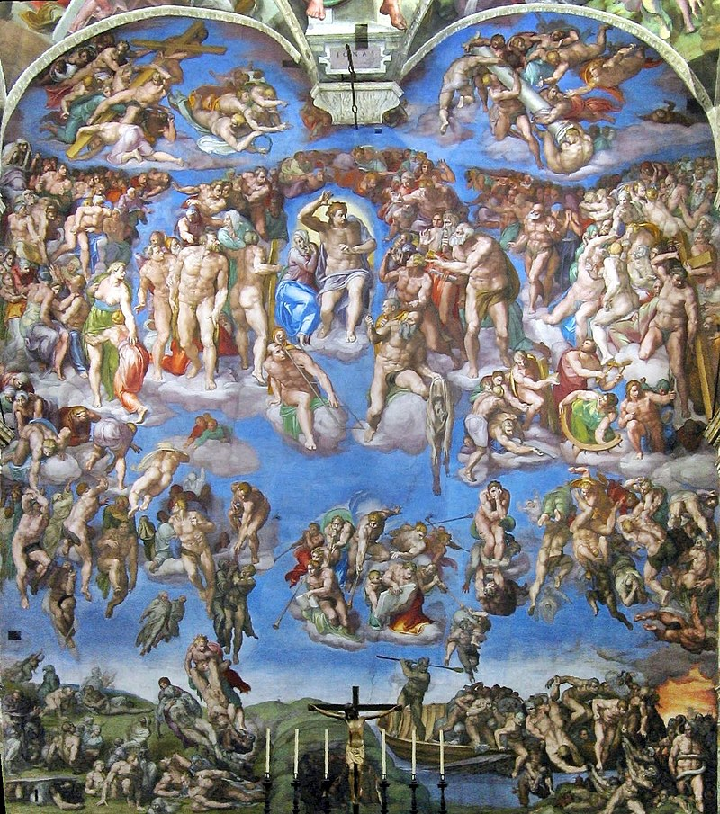

Il Giudizio Universale
Il Giudizio universale è situato sulla parete dietro l’altare della Cappella Sistina. A progettarlo e a realizzarlo è Michelangelo Buonarroti.
La volta della Cappella Sistina è una delle opere d’arte più rinomate e celebrate al mondo, questo affresco fu commissionato a Michelangelo da papa Giulio II, e andava a completare la decorazione della cappella con la rappresentazione degli eventi biblici prima della consegna delle tavole della legge a Mosè, partendo dalla creazione dell'uomo.

<— Home page